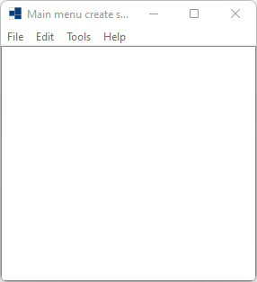
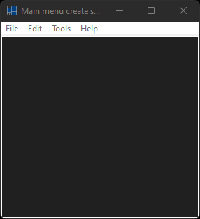
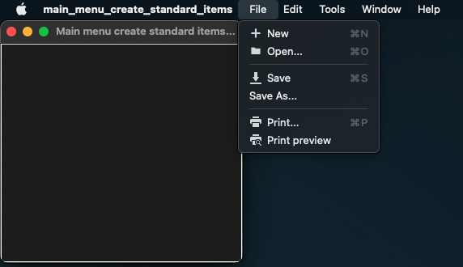
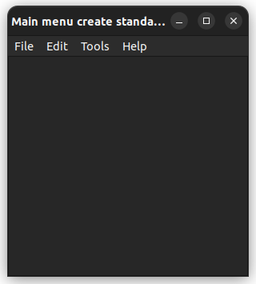

|
xtd
0.2.0
|
Loading...
Searching...
No Matches
main_menu_create_standard_items.cpp
demonstrates the use of xtd::forms::main_menu::create_standard_items method.
- Windows
- 

- macOS


- Gnome


#include <xtd/forms/application>
#include <xtd/forms/form>
#include <xtd/forms/list_box>
#include <xtd/forms/main_menu>
using namespace xtd;
using namespace xtd::forms;
namespace main_menu_create_standard_items_example {
public:
form1() {
text("Main menu create standard items example");
menu(main_menu1);
list_box1.parent(*this);
list_box1.dock(dock_style::fill);
}
private:
list_box1.selected_index(list_box1.items().size() - 1);
// Index 0 corresponds to the file menu and index 9 corresponds to the file exit menu.
if (main_menu1.menu_items()[0].get().menu_items()[9].get() == sender) application::exit();
}
list_box list_box1;
};
}
auto main() -> int {
application::run(main_menu_create_standard_items_example::form1 {});
}
Represents the base class for classes that contain event data, and provides a value to use for events...
Definition event_args.hpp:18
static void exit()
Informs all message pumps that they must terminate, and then closes all application windows after the...
static void run()
Begins running a standard application message loop on the current thread, without a form.
Represents a window or dialog box that makes up an application's user interface.
Definition form.hpp:54
@ fill
All the control's edges are docked to the all edges of its containing control and sized appropriately...
Definition dock_style.hpp:35
The xtd::forms namespace contains classes for creating Windows-based applications that take full adva...
Definition texts.hpp:219
Contains classes that represent ASCII and Unicode character encodings; abstract base classes for conv...
Definition basic_string_builder.hpp:17
The xtd namespace contains all fundamental classes to access Hardware, Os, System,...
Definition abstract_object.hpp:8
Generated on Mon Jun 30 2025 10:58:54 for xtd by Gammasoft. All rights reserved.